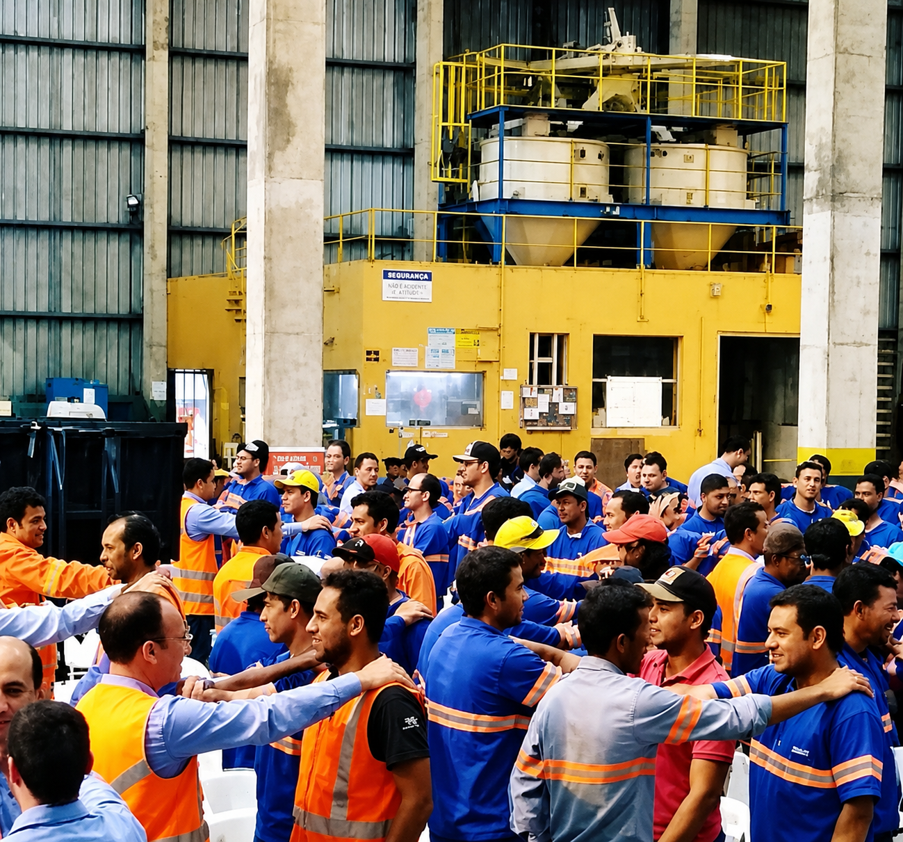

Palestra Teatral – 🚦 Semáforo da Segurança
A Nova NR1
A Nova NR-1 chegou. Sua empresa está preparada?
Sua organização precisa abordar temas como PGR, riscos psicossociais, saúde mental e assédio moral?
A Novo Tempo Eventos apresenta Semáforo da Segurança – A Nova NR-1, uma palestra teatral inovadora que transforma os novos desafios da prevenção em uma experiência envolvente, reflexiva e de alto impacto.
Uma abordagem diferente para despertar a consciência, promover mudanças de comportamento e fortalecer a cultura de prevenção dentro das organizações.
Quer entender como essa experiência pode transformar a sua SIPAT? Entre em contato com a Novo Tempo Eventos.